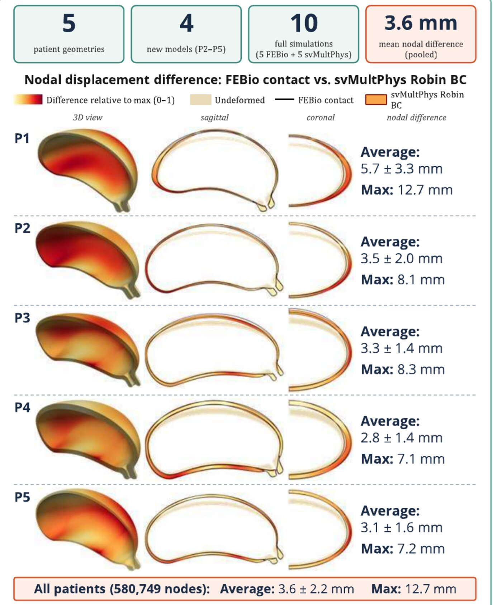
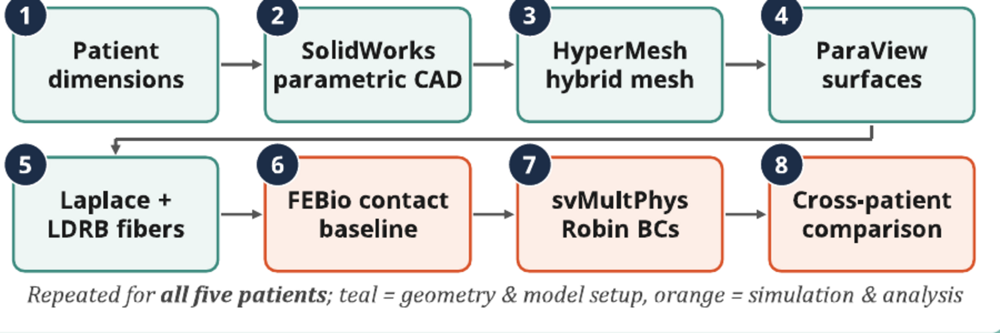
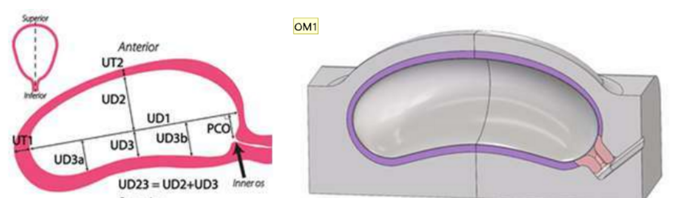
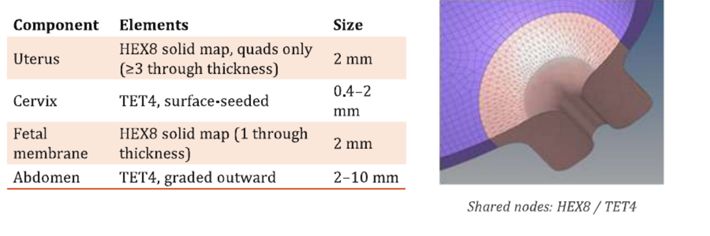
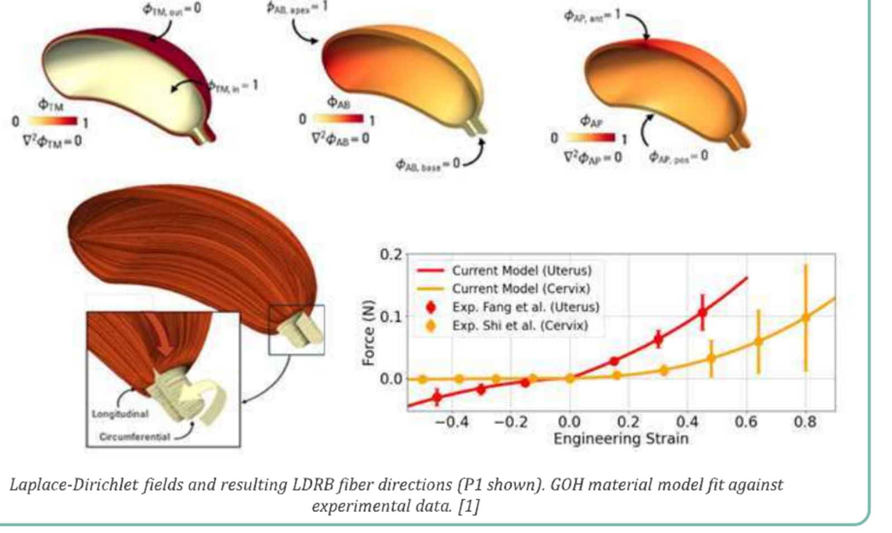
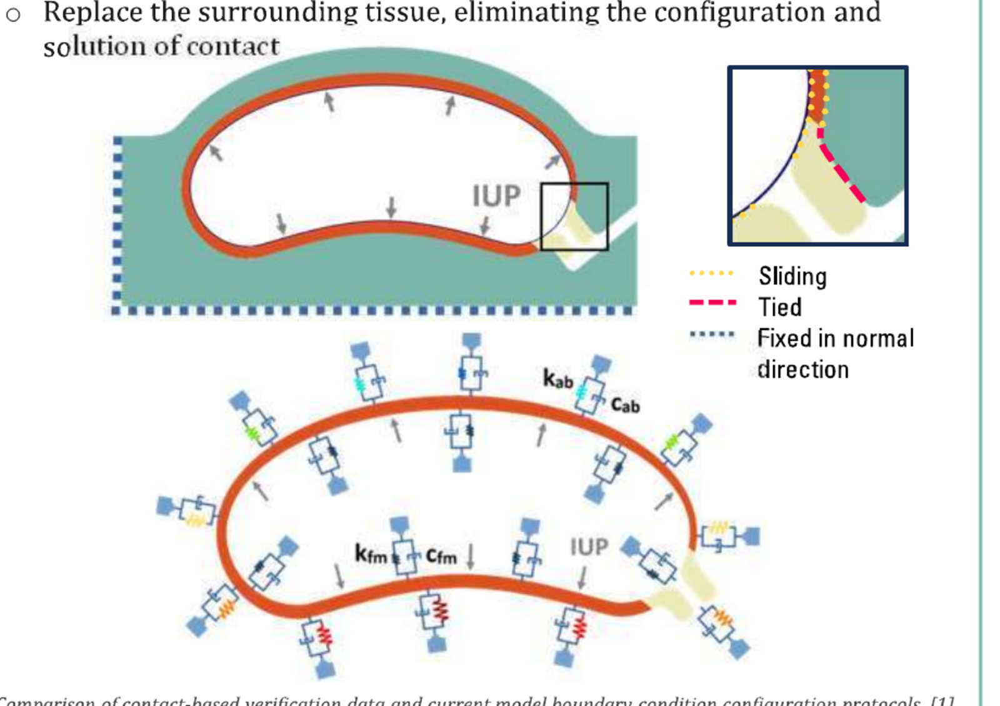

Multi-patient evaluation of computational models of uterine mechanics
A fast modeling approach was verified on one patient. I scaled it to five and measured whether it still holds — mean nodal agreement of 3.6 ± 2.2 mm across 580,749 nodes.

Why model the pregnant uterus
Only about 5% of pregnancies deliver on the estimated due date, and preterm birth before 37 weeks affects roughly 10% of births worldwide. Mechanics is part of why. The uterus distends as the fetus grows and the cervix holds as a mechanical barrier until it softens and dilates, and image-based finite element models can probe that mechanical environment without touching the patient.
The framework I built on
My lab developed a cardiac-mechanics-inspired pipeline for uterine passive mechanics that replaces explicit contact with the surrounding abdomen and fetal membrane by spatially varying Robin boundary conditions. It matched the contact-based FEBio reference to an average nodal displacement difference of 3.1 ± 1.6 mm at about 90% lower computational cost — but it was developed and tuned on a single patient geometry, which is where this project starts.
What I did
I extended and streamlined that single-patient pipeline to five patient-specific geometries, building four new patient models (P2–P5) and testing whether one standardized workflow, and one set of boundary condition parameters tuned on a different anatomy, transfers across anatomical variability. I ran all ten simulations — five in FEBio, five in svMultPhys — and built the cross-patient comparison.

Building each patient
Geometry is parametric rather than segmented. A SolidWorks template developed by Louwagie et al. is driven by a design table of sagittal, axial and cervical measurements taken from ultrasound and MRI, so each patient is a new set of dimensions rather than a new model.

Meshing is where most of the hands-on difficulty lives. Every component is meshed in HyperMesh with continuous nodes across the uterus–cervix interface and across model halves — a Boolean that keeps the shared interface, so the mesher is forced to align nodes without merging the solids. That continuity is what removes the need to define contact between those tissues at all.



Results
Across all five patients and 580,749 nodes, the two models agreed to a mean nodal displacement difference of 3.6 ± 2.2 mm, with a maximum of 12.7 mm. Per-patient means ranged from 2.8 to 5.7 mm.
The result that matters: the Robin boundary condition parameters were tuned on P5 and transferred to the other anatomies without re-tuning. P2 through P4 landed within 0.4 mm of P5. P1 was the single outlier at 5.7 ± 3.3 mm.
| Patient | Mean difference (mm) | Max difference (mm) |
|---|---|---|
| P1 | 5.7 ± 3.3 | 12.7 |
| P2 | 3.5 ± 2.0 | 8.1 |
| P3 | 3.3 ± 1.4 | 8.3 |
| P4 | 2.8 ± 1.4 | 7.1 |
| P5 (tuned) | 3.1 ± 1.6 | 7.2 |
| Pooled | 3.6 ± 2.2 | 12.7 |
Where the models disagree is as informative as the average. The largest differences sit at the lateral wall in the coronal view and the posterior wall in the sagittal view, which is consistent with omnidirectional springs being unable to represent sliding between the uterus and the abdomen. The cervix agreed most closely — the same pattern the single-patient study found.
What scaling actually cost
Moving from one patient to five surfaced bottlenecks that a single case never exposes: fillet-driven stress concentrations in the parametric geometry, node continuity across the uterus–cervix interface, and mesh conversion between the two solvers. Resolving those into one documented protocol — geometry through meshing, surfaces, fibers and solvers — is a large part of what this work produced.
What I’d do next
P1 is the open question. Five patients is still a small cohort, and the fact that one anatomy falls outside the band the others share is the thing worth chasing before the pipeline is trusted on a larger group. Boundary condition tuning is also still manual, which does not scale to cohort-size studies; automating it is the obvious next step toward the longitudinal growth-and-remodeling and active contraction models this framework is meant to support.
Research poster (PDF) Framework preprint
Related publications
Dee K, Mergler O, Myers K, Vedula V. Multi-Patient Evaluation of Computational Models of Uterine Mechanics. Poster, Columbia University Undergraduate Research Symposium, New York, NY, October 2026. — the work on this page.
Mergler O, Dee K, et al. A Method for Image-Based Modeling of Uterine Passive Mechanics During Late Pregnancy. In revision, Annals of Biomedical Engineering. Preprint: bioRxiv 10.64898/2026.07.10.737823 — the method this work extends and tests.
- Lab
- Computational Biomechanics Research Lab
- Advisor
- Prof. Vijay Vedula
- Dates
- Apr 2025 – present
- Tools
- SolidWorks, HyperMesh, FEBio, svMultPhys, ParaView
- Compute
- ACCESS (SDSC Expanse), Columbia Ginsburg HPC